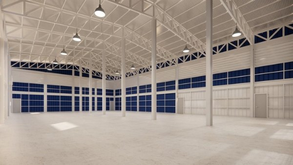

เกี่ยวกับ Prime AtosphereAbout Prime Atosphere
ทีมที่เข้าใจความร้อน ตั้งแต่สารจนถึงระบบA team that understands heat — from fluid to system
บริษัท ไพรม์ อโตสเฟียร์ (ประเทศไทย) จำกัด (Prime Atosphere) ก่อตั้งในปี 2567 เพื่อให้คำปรึกษาและจัดจำหน่ายสารทำความเย็น ของไหลระบายความร้อน สารทำความสะอาดระบบ และเทคโนโลยีระบบอัตโนมัติสำหรับอุตสาหกรรม เราสนับสนุนการตัดสินใจซื้อของลูกค้าด้วยข้อมูลทางเทคนิค ข้อกำหนดการใช้งาน และสเปกการจัดส่งที่ชัดเจนPrime Atosphere (Thailand) Co., Ltd. was established in 2024 to provide consultancy and distribute refrigerants, cooling fluids, system-cleaning solutions and automation technologies for industry. We support every purchase with technical data, application requirements and clear supply specifications.
เราทำงานร่วมกับ Organic Wealth Thailand เพื่อดูแลลูกค้าที่ต้องการทางเลือกหลากหลาย ทั้งในช่วงเปลี่ยนผ่านสู่สารที่เป็นมิตรต่อสิ่งแวดล้อมมากขึ้น และในระบบเดิมที่ยังต้องดูแลต่อเนื่องAlongside Organic Wealth Thailand, we serve customers who need a broad range of options — through the transition to lower-impact chemistries and for existing systems that still need reliable support.

แบรนด์ที่เราทำงานด้วยBrands we work with
ตัวแทนจำหน่ายผลิตภัณฑ์จากผู้ผลิตชั้นนำของยุโรปและญี่ปุ่นAuthorized partner of leading European and Japanese manufacturers.